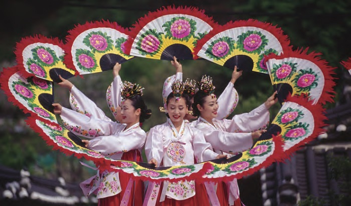
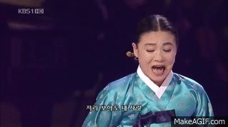
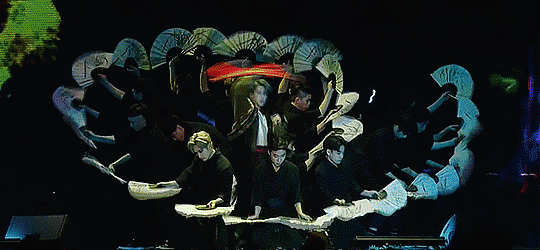
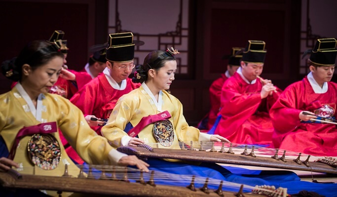

Con K-Classic en este caso nos referimos a la musica clásica y/o tradicional de Corea del Sur. Por ejemplo el término "Gugak". El término Gugak que literalmente significa “música nacional”, se refiere a la música tradicional coreana y otras formas de artes vinculadas como el canto, la danza y los movimientos ceremoniales. La historia de la música en Corea es tan extensa como la misma historia nacional. Sin embargo, recién en el siglo XV, durante el reinado del Rey Sejong de la dinastía Joseon (1392-1910), se establecieron los fundamentos como música formal creándose así el sistema de escala musical y la partitura más antigua de Asia, denominada jeongganbo. Los esfuerzos del Rey Sejong para reformar la música de la corte condujo no solamente a la creación de un sistema de escala musical propia de Corea sino que también resultó en la composición del jeryeak música especial para ceremonias para ser interpretada durante el Rito a los Reyes Ancestrales, que aún hoy tienen lugar en el Santuario de la Realeza que fue registrado en el Listado Representativo de Patrimonios Culturales Intangibles de la Humanidad de la UNESCO y Yeomillak, o “Gozo del pueblo”. El término gugak se acuñó por Jangagwon, una agencia del gobierno responsable por la música, a fines de la dinastía Joseon para distinguirla de la música extranjera.
La música tradicional coreana se clasifica en diversas clases: la “música legítima” (denominada Jeongak o Jeongga) cuya práctica pertenecía a la realeza y aristocracia de Joseon; la música folclórica, incluido el pansori, sanjo y japga; jeongjae (música y danza perteneciente a la corte) interpretada para celebraciones de eventos de estado; música y danza vinculada al chamanismo y tradiciones budistas, como el salpuri, seungmu y beompae; y canciones poéticas practicadas por los literatos élites como el gagok y el sijo. De las numerosas canciones folclóricas más populares entre el pueblo, el tema Arirang - registrado en el Listado Representativo de los Patrimonios Culturales Intangibles de la Humanidad en 2012 - es particularmente amado por su gran variedad en letra y melodía conmovedoras. El pueblo coreano también ha desarrollado una amplia gama de instrumentos musicales. Estos instrumentos musicales tradicionales se dividen en tres categorías: instrumentos de viento, como el piri, daegum, danso, y taepyeongso; instrumentos de cuerda, como el gayageum, geomungo, haegeum, ajaeng y bipa; y por último, instrumentos de percusión, como el buk, janggu, kkwaenggwari y jing, entre otros.
La danza tradicional coreana se originó en los antiguos rituales chamánicos. Durante la época de los tres reinos de Corea, se perciben los primeros indicios de la danza coreana. En la época de los reinos coreanos posteriores, Goryeo y Joseon, la danza se benefició del apoyo regular de la corte real, numerosas academias, e incluso hubo un ministerio oficial del gobierno dedicado a la danza. Un número de diferentes danzas ganó un estatus social elevado permanente, incluyendo el dance del ermitaño; la danza de los espíritus; la buchaechum (la danza de los abanicos que llega a tener exquisitas coreografías); la seungmu (la danza del monje), y otras, a pesar de que muchas de ellas tenían orígenes humildes. Por ejemplo, Buchaechum (la danza de los abanicos) tiene su origen en un ritual de los chamanes, sin embargo se convirtió en una de las danzas coreanas más refinadas. 
Otras danzas coreanas permanecieron bajo la cultura de los agricultores y grupos de danza folclórica. Elementos principales utilizados en los bailes son la bufanda de seda larga ondulante de color blanco puro que se utiliza en la salpuri, así como tambores, sombreros, espadas y otros elementos. Los temas de apoyo para estas danzas pueden ser periféricos o centrales en torno al relato en que se basa la danza. La invasión de Corea por parte de Japón causó la desaparición de muchas danzas y academias de baile tradicional coreano; durante la invasión y ocupación nipona hubo una supresión cultural, al extremo que podría decirse fue un genocidio de la cultura coreana. A este respecto, algunas formas de danzas fueron distorsionadas. A pesar de esta dificultad, algunas pocas pioneras, como Choi Seung-hee (en Hangul: 최승희, en Hanja: 崔承喜) crearon secretamente nuevas formas de danzas basadas en los cuentos tradicionales.
Actualmente ocurre a la inversa: la danza tradicional está disfrutando de un llamativo resurgimiento de la mano de numerosas universidades que enseñan bailes tradicionales. Los mejores bailarines de danzas tradicionales coreanas son reconocidos como «tesoros nacionales» para que también tengan la oportunidad de instruir a sus discípulos